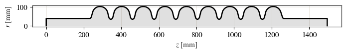
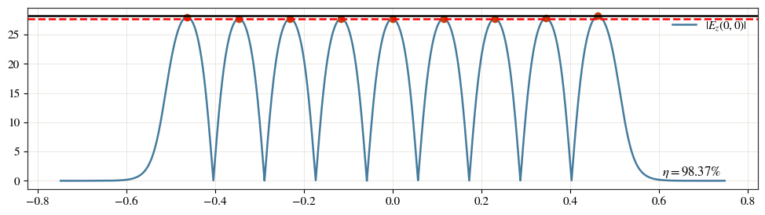
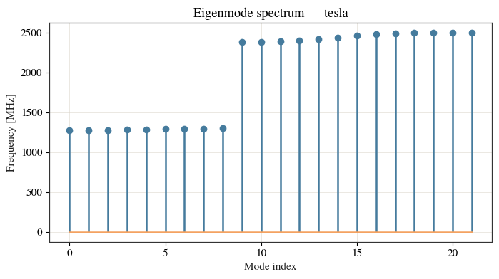
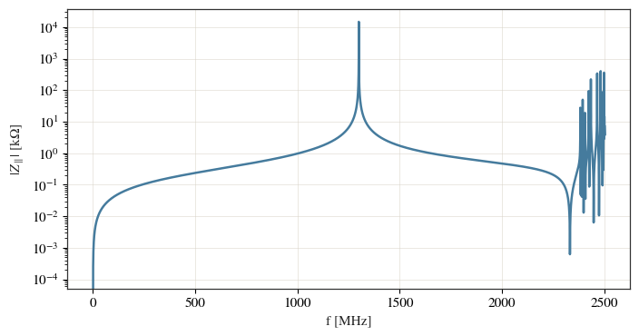
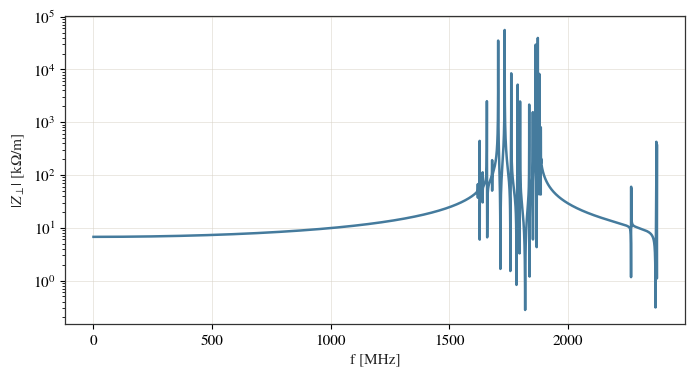

Eigenmode: the TESLA elliptical cavity¶
This example runs the eigenmode solver on the canonical TESLA elliptical cell — the fundamental accelerating mode and its figures of merit, then the monopole and dipole passbands and the mode-reconstructed impedance. Everything is driven through the cav.eigenmode interface on a single cavity (no Study needed).
See the eigenmode theory and user guide.
import os
import tempfile
import matplotlib.pyplot as plt
from cavsim2d import EllipticalCavity
from cavsim2d.utils.style import apply_style
apply_style()
1. The cavity¶
A single TESLA mid-cell, parameters [A, B, a, b, Ri, L, Req] in mm, with beam pipes at both ends.
midcell = [42, 42, 12, 19, 35, 57.652, 103.3536] # <- A, B, a, b, Ri, L, Req
endcell_l = [40.34, 40.34, 10, 13.5, 39, 55.7251, 103.3536]
endcell_r = [42, 42, 9, 12.8, 39, 56.8407, 103.3536]
cav = EllipticalCavity(9, midcell, endcell_l, endcell_r, beampipe='both', name='tesla')
cav.set_workspace(os.path.join(tempfile.mkdtemp(), 'tesla'))
cav.plot('geometry') # matplotlib half cross-section (r >= 0)
plt.show()

2. The fundamental monopole mode¶
cav.eigenmode.run(...) solves the monopole passband; cav.eigenmode.qois returns the figures of merit of the accelerating (pi) mode.
cav.eigenmode.run({'polarisation': 'monopole',
'boundary_conditions': 'mm',
'mesh_config': {'h': 6, 'p': 3}})
cav.eigenmode.qois
{'m': 0,
'polarisation': 'monopole',
'Normalization Length [mm]': 115.304,
'N Cells': 9,
'freq [MHz]': 1300.0062842171467,
'Q []': 29236.789419263256,
'Vacc [MV]': 1.5169262200444274e-05,
'Eacc [MV/m]': 1.4617650539678945e-05,
'Epk [MV/m]': 2.9358256981550473e-05,
'Hpk [A/m]': 0.04872094407769789,
'Bpk [mT]': 6.122454399618194e-05,
'kcc [%]': 1.8299452510197212,
'ff [%]': 98.36632068217993,
'Rsh [MOhm]': 29.609745417306776,
'R/Q [Ohm]': 1012.7563937577152,
'Epk/Eacc []': 2.0084114681671195,
'Bpk/Eacc [mT/MV/m]': 4.188398390698334,
'G [Ohm]': 271.3058410996727,
'GR/Q [Ohm^2]': 274766.72523750825,
'No of Mesh Elements': 6167,
'mode_of_interest': '9',
'No of DOFs': 87608}
The accelerating field on the axis — a single peak at the cell centre, as it should be for the fundamental:
cav.plot_axis_field()

<Axes: >
3. Higher-order modes¶
The same 2D meridian mesh solves any azimuthal order. Here the monopole and dipole passbands together; qois_df tabulates every mode of every polarisation. It has many columns, so we show a readable subset:
cav.eigenmode.run({'polarisation': ['monopole', 'dipole', 'quadrupole'],
'n_modes': 20,
'boundary_conditions': 'mm',
'mesh_config': {'h': 6, 'p': 3}})
df = cav.eigenmode.qois_df
cols = ['polarisation', 'mode', 'freq [MHz]', 'R/Q [Ohm]', 'G [Ohm]',
'Epk/Eacc []', 'Bpk/Eacc [mT/MV/m]']
df[[c for c in cols if c in df.columns]].round(3).head
<bound method NDFrame.head of polarisation mode freq [MHz] R/Q [Ohm] G [Ohm] Epk/Eacc [] \
0 monopole 0 1276.433 0.001 268.617 2316.889
1 monopole 1 1278.503 0.000 268.886 4795.157
2 monopole 2 1281.690 0.009 269.299 819.870
3 monopole 3 1285.624 0.001 269.804 3039.467
4 monopole 4 1289.841 0.023 270.346 545.599
.. ... ... ... ... ... ...
61 quadrupole 17 2490.381 5.949 478.421 26.715
62 quadrupole 18 3213.392 0.073 350.478 354.111
63 quadrupole 19 3225.452 7.745 359.557 54.083
64 quadrupole 20 3229.549 1.290 360.504 110.743
65 quadrupole 21 3252.133 19.094 380.749 28.972
Bpk/Eacc [mT/MV/m]
0 5696.033
1 11699.431
2 1951.914
3 7016.717
4 1237.888
.. ...
61 88.218
62 1852.212
63 284.257
64 578.649
65 145.357
[66 rows x 7 columns]>
The mode spectrum:
cav.eigenmode.plot_spectrum()

<Axes: title={'center': 'Eigenmode spectrum — tesla'}, xlabel='Mode index', ylabel='Frequency [MHz]'>
4. Impedance reconstructed from the modes¶
Each mode is treated as a resonator, so the eigenmode results reconstruct the beam-coupling impedance directly (see the theory page). This is cheap and has no wake-length truncation, so it complements a wakefield solve.
cav.eigenmode.plot_impedance('longitudinal')

<Axes: xlabel='f [MHz]', ylabel='$|Z_\\parallel|$ [k$\\Omega$]'>
cav.eigenmode.plot_impedance('transverse')

<Axes: xlabel='f [MHz]', ylabel='$|Z_\\perp|$ [k$\\Omega$/m]'>
Where to go next¶
Eigenmode: the pillbox cavity — a fully analytic check of the solver (100 modes vs the closed form).
Interactive 3D field/mesh views:
cav.show_fields(...),cav.show_mesh()(NGSolve webgui, notebook-only).Tuning to hit a target frequency.